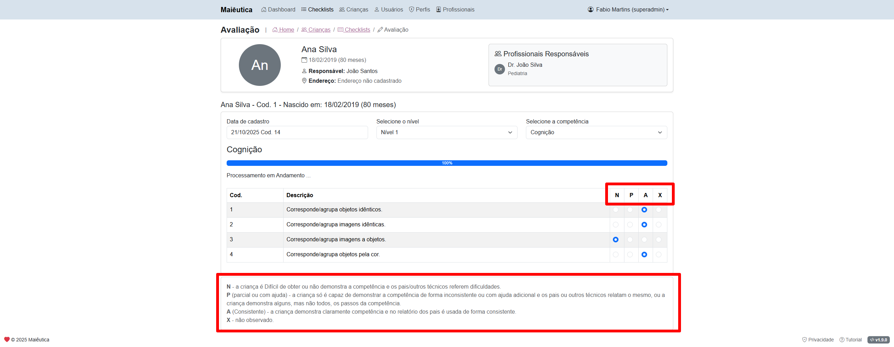
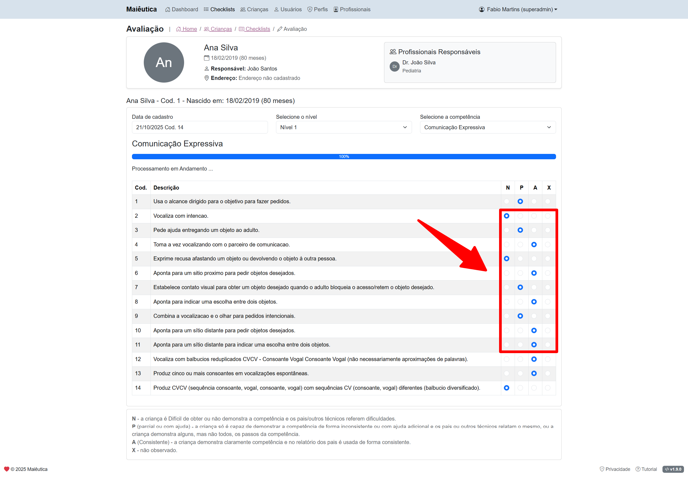

✍️ Preencher Avaliação (Atribuir Notas)
Aprenda a avaliar competências, atribuir notas de 0 a 3 e adicionar observações clínicas.
1. Sistema de Notas (Escala 0-3)
| Nota | Coluna | Descrição | Quando Usar |
|---|---|---|---|
| 0 | X | Não observado | A competência não foi observada ou testada durante a sessão |
| 1 | N | Difícil de obter / Não demonstra | A criança não demonstra a competência ou é difícil de obter. Os pais/outros técnicos referem dificuldades na mesma competência |
| 2 | P | Parcial ou com ajuda | A criança só demonstra a competência de forma inconsistente ou com ajuda adicional. Os pais/técnicos relatam o mesmo, ou a criança demonstra alguns, mas não todos, os passos da competência |
| 3 | A | Consistente | A criança demonstra claramente a competência e, no relatório dos pais/técnicos, é usada de forma consistente |
⚠️
Importante: Nota
0 (X) significa "não observado", não que a criança não sabe. Use apenas quando não testou a competência!2. Como Atribuir Notas
Leia a descrição da competência
Entenda exatamente o que está sendo avaliado. Ex: "Mantém atenção em atividade direcionada por 5 minutos"
Observe e avalie o desempenho da criança
Baseie-se no que observou durante a sessão e nos relatos dos pais/outros técnicos.
Selecione a coluna correspondente (X, N, P ou A)
Clique na coluna que melhor representa o desempenho da criança naquela competência.
Veja o percentual atualizar automaticamente
O sistema recalcula em tempo real os percentuais por domínio conforme você preenche.
Exemplos Práticos de Atribuição:
| Competência | Observação | Nota | Justificativa |
|---|---|---|---|
| Identifica cores primárias | Não testado nesta sessão | X (0) | Não houve oportunidade de avaliar essa competência |
| Mantém contato visual | Evita olhar nos olhos, pais relatam dificuldade em casa | N (1) | Criança não demonstra a competência e há relato consistente de dificuldade |
| Conta até 10 | Consegue com ajuda verbal, às vezes se perde após o 7 | P (2) | Demonstra parcialmente, precisa de suporte e é inconsistente |
| Reconhece o próprio nome | Sempre responde ao nome, pais confirmam uso consistente | A (3) | Demonstra claramente e há confirmação de uso consistente |

Interface de atribuição de notas: X (0), N (1), P (2), A (3)
3. Salvamento Automático
O sistema salva automaticamente cada avaliação ao clicar nas opções de cada competência.
✅
Importante: Não é necessário clicar em "Salvar" durante o preenchimento. Cada nota atribuída é salva automaticamente no sistema!

O sistema salva automaticamente ao clicar em cada opção (X, N, P ou A)
4. Próximos Passos
➡️
Próxima etapa: Acesse Visualizar Resultados para aprender a interpretar gráficos e percentuais.